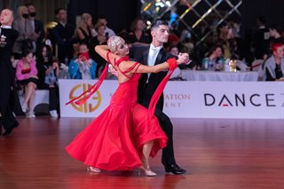

Ocupatiile mele
Dansurile sportive

M-am ocupat cu dansurile sportive mai mult de 7 ani,participand la mai multe concurse internationale.
Dansul sportiv infatiseaza dansul ca pe o activitate de echipa.Acesta este divizat in doua sectiuni:standart si latino-american.
Standart
- Vals Lent
- Tango
- Vals Vienez
- Slow fox
- Quick step
Latino-Americane
- Samba
- Cha-Cha-Cha
- Rumba
- Paso doble
- Jive
Pictura.Cursuri
 Cursuri efectuate
Cursuri efectuate
- Engleza
- Dansuri
- Desene/pictura
Ma ocup cu pictura deja de 2 ani.Am frecventat cursuri de pictura timp de 1.5 in cadrul cercului ,,Paleta de aur".
Materialele favorite pe care le utilizez cel mai des:
- Creion simplu(HB,2B)
- acuarela
- carbune
- guas
| Limba studiata |
Nivelul |
| L.engleza |
B2 |
| Limba italiana |
B2 |
| Limba rusa |
B2 |
Paleta de aur